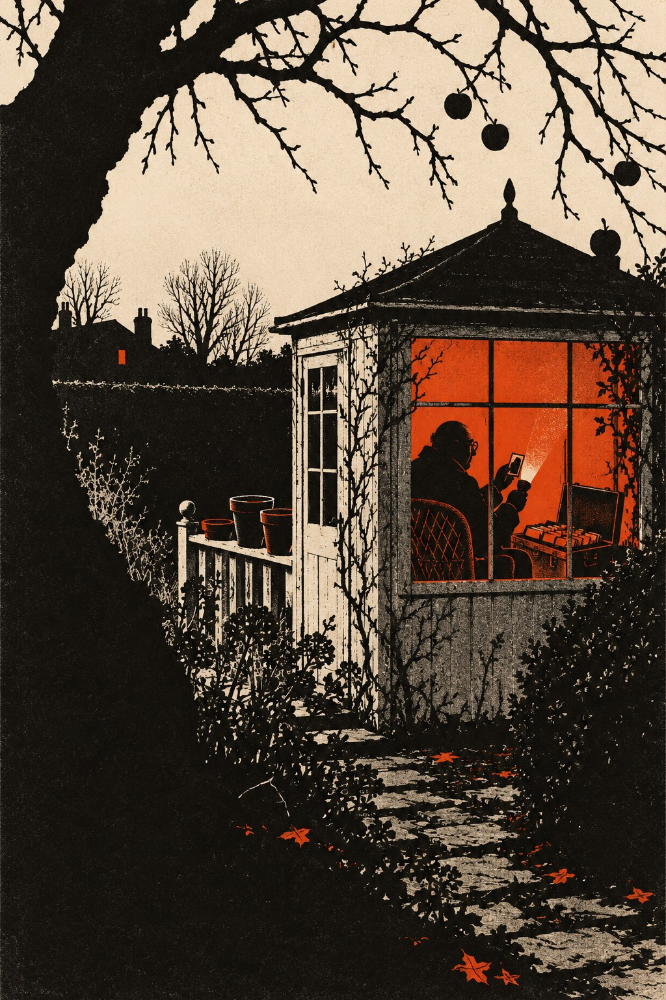

Картотека

Попробуй отнять у меня милые дары небес,
Незримый этот луч, звучащую эту тайну.— Катарина Регина фон Грайфенберг, «О неудержимом благородном искусстве поэзии»
Глава первая
Дин Уинслоу впервые лез в чужой дом по службе, и всё, чему его учили в Актоне, оказалось правдой, кроме собаки.
Учили его два года. Фонарщиками в Цирке, как свои звали британскую разведку по её дому на Кембридж-сёркус, называли отдел, который сидел в Актоне, в кирпичном флигеле за вывеской транспортной конторы, и делал для остальных чёрную работу: возил пакеты, ставил метки, ходил за людьми по улицам, открывал чужие двери и закрывал их так, чтобы хозяева ничего не заметили. Дина учили замкам, сигнализации, бумагам в ящиках стола, которые надо фотографировать и класть на место с тем же загнутым уголком, и тому, что старые дома скрипят на третьей ступеньке снизу и на второй сверху. Дину было двадцать четыре, он вырос в Хаунслоу, отслужил в военной полиции и попал в Актон по рекомендации сержанта, который сказал о нём одно: не задаёт вопросов.
Вопросов он не задал и в этот раз. В четверг вечером Бисли, старший в их паре, посадил его в серый фургон с надписью стекольной мастерской из Ридинга и по дороге в Оксфорд изложил дело. Дом на краю деревни за Хедингтоном. Хозяйка умерла две недели назад, её подруга, которая с ней жила, до воскресенья уехала к сестре в Бат. Нужны бумаги старухи. Всё, что написано от руки, все карточки, каждая тетрадка. Фотографировать не надо, брать с собой. И чтобы выглядело как настоящая кража: прихватить что-нибудь с камина, вытрясти комод.
— А что в бумагах? — спросил всё-таки Дин уже за Хай-Уикомом, потому что молчать дальше было тоскливо.
Бисли сказал, что старуха когда-то работала на фирму и унесла с собой то, что уносить не полагалось, и что фирма хочет своё обратно. На их языке фирмой назывался сам Цирк.
В деревню они въехали в первом часу ночи, поставили фургон в конце просёлка, у развилки, и дальше пошли пешком. Дом стоял отдельно, за живой изгородью: низкий, длинный, с двумя трубами и заросшим садом, в глубине которого что-то белело, то ли сарай, то ли беседка. Замок на задней двери Бисли открыл за минуту, и Дин, держа фонарь, подумал, что видит работу мастера.
В доме пахло табаком, лекарствами и застоявшимся джином. В кухне на полке стояли в ряд пустые бутылки, аккуратно, как книги, а в гостиной книги лежали везде, как бутылки. На спинке кресла висел вязаный плед, на подлокотнике остались очки, и Дину на минуту стало не по себе, словно хозяйка вышла и сейчас вернётся. Бисли толкнул его в спину и показал на лестницу.
Наверху, в маленькой комнате под скосом крыши, нашлись коробки. Их было шесть, длинных, картонных, какие бывают в библиотечных каталогах, и в каждой стояли плотно, одна к другой, сотни карточек, исписанных крупным размашистым почерком. Бисли крякнул и взял сразу две. Дин взял третью, и тут залаяла собака.
Собаки в инструкции не было. Она жила за изгородью, у соседей, и лаяла захлёбываясь, без пауз. У соседей зажёгся свет наверху, потом внизу, потом над крыльцом. Хлопнула дверь, и мужской голос спросил в темноту, кто там.
Потом Дин не мог вспомнить, как они спустились. Помнил, что на третьей ступеньке снизу лестница действительно скрипнула. Помнил, что Бисли свои две коробки бросил на кухне, потому что с ними нельзя было перелезть через изгородь, и смахнул с камина в сумку часы и два подсвечника, как велели. Помнил мокрую траву и колючую ветку, которая расцарапала ему щёку. В фургоне он обнаружил, что всё ещё прижимает к груди свою коробку, как ребёнка.
Бисли гнал по автостраде в сторону Лондона и не сказал ни слова. Только у Хай-Уикома он съехал с автострады к ночной заправке, вышел, и Дин, оставшись один, включил фонарь и вытащил из коробки самую первую карточку.
«Шарлотка с яблоками, — было написано на ней. — Яблоки только кислые. Хилари не любит корицу, не класть, что бы она ни говорила».
Дин перебрал десяток карточек. Пудинг с почками. Крыжовниковое варенье. Борщ, с припиской «по киевскому способу, как у старухи в Вене». Когда Бисли вернулся с двумя стаканами чая, Дин смеялся так, что не мог взять стакан. Бисли посмотрел на карточку, на коробку, на Дина и не засмеялся.
— Рецепты, — сказал он. — Две коробки на кухне и одна с рецептами. И собака. И часы с камина, которые теперь надо куда-то деть. Пей чай, сынок. Утром в Актоне тебе будет не до смеха.
Дин пил чай и думал о том, что старуха, видно, была женщина масштабная, если даже рецепты записывала на карточках, по алфавиту, с перекрёстными ссылками. В углу карточки с шарлоткой стояло: «см. Корица». Он даже поискал корицу. Карточки на корицу в коробке не было.
Глава вторая
Конни Сакс хоронили в пятницу, за неделю до того, как в её дом влезли, в крематории в Хедингтоне, и пришло на похороны девять человек, если считать священника.
Смайли сидел в предпоследнем ряду и считал. Хилари в первом ряду, одна, в чёрном пальто с чужого плеча, с непокрытой головой и слишком прямой спиной. За ней три пожилые дамы, в которых Смайли не сразу узнал молодых женщин из Ресёрча, московского исследовательского отдела, тех, кого Конни звала своими девочками. Старик-сосед с собакой, которую он оставил привязанной у входа. Брат Конни, краснолицый, в синих прожилках старик из Ньюбери, который всю службу смотрел на часы. И молодой человек в тёмном костюме, гладко причёсанный, которого Смайли не знал, который вошёл последним, вежливо кивнул Смайли, как незнакомому, и сел у самой двери. Ушёл он до того, как закрылась занавеска: Смайли услышал за спиной, как тихо клацнула щеколда.
Венков было два. Один от Хилари, из осенних листьев и рябины, собранных в саду и связанных неумело. Другой, большой и дорогой, из белых лилий, с карточкой «От друзей» и без подписи. Конни терпеть не могла лилий. Смайли знал, кто заказал венок, не зная имени: так в Цирке прощались со своими, через девушку из бухгалтерии, которая держала в ящике стола телефон цветочного магазина на Пикадилли.
Священник, который Конни не знал, сказал, что покойная долго служила на государственной службе, любила сад, книги и собак. Девочки второго ряда переглянулись, и одна из них отвернулась, чтобы не засмеяться. Смайли был ей за это благодарен.
Последний раз он видел Конни в сентябре. После Берлина, после моста и человека, который перешёл его и не поднял с земли зажигалку, Смайли приезжал к ней дважды. Он сам не знал зачем. Может быть, потому, что из всех, кто тридцать лет читал вместе с ним Москву строчка за строчкой, осталась только она. Во второй раз она уже не вставала. Она лежала на диване в гостиной под вязаным пледом, огромная, отёчная, с распухшими руками, которыми уже не могла держать сигарету, и Хилари вкладывала ей сигарету в губы и вынимала.
Под конец Конни отослала Хилари на кухню за льдом, хотя лёд был на столе, и поманила Смайли пальцем поближе.
— Джорджи. Всё, что я помню, лежит там, где у меня летом гераньки. Не в доме, в доме рецепты и птички. И не вздумай сказать мне, что это не по правилам. Всё не по правилам, дорогой. Правила придумали для людей, у которых память как у курицы.
И потом, когда Хилари вернулась со стаканом, который никому не был нужен, Конни заговорила о старом Контроле, как в Цирке звали прежнего шефа, о том, как он однажды принёс ей в архив букет подснежников и не сказал, за что, и больше к карточкам не возвращалась.
У выхода из крематория Хилари взяла его за рукав и сказала, что уедет к сестре в Бат до следующего воскресенья, потому что не может спать в доме. Сказала, что ключ оставит соседу с собакой. И сказала ещё одно, глядя не на него, а на красивый венок из лилий, который служители выносили через боковую дверь:
— Она сказала, что вы знаете, что делать. Я не знаю. Я не хочу знать.
В пятницу следующей недели, в половине восьмого утра, в доме на Байуотер-стрит зазвонил телефон. Хилари звонила из Бата, и голос у неё был такой тонкий, что Смайли сначала подумал, что звонит ребёнок. Ей позвонили из полиции. В доме ночью были воры. Сосед их спугнул. Взяли часы, подсвечники и какие-то бумаги. Полиция просит её приехать и посмотреть, что пропало, а она не может, просто не может, понимает ли он.
Смайли сказал, что понимает и что поедет сам. Положив трубку, он постоял в прихожей, слушая, как наверху в ванной течёт вода: Энн вернулась в сентябре, как возвращалась всегда, не объяснив ничего. Потом поднялся, постучал в дверь и сказал сквозь дверь, что уезжает в Оксфорд и что, может быть, задержится. Из-за двери сказали «хорошо, дорогой», и вода перестала течь, как будто Энн задумалась, а потом потекла снова.
Глава третья
Когда такси от оксфордского вокзала довезло Смайли до деревни, было начало третьего, и у дома Конни всё ещё стояла полицейская машина, белая, с синей полосой, и рядом с ней старый чёрный «ягуар», ухоженный куда лучше обычной служебной машины. Калитка была открыта. По дорожке к крыльцу тянулись следы ботинок по сырому гравию, и в окне кухни Смайли увидел спину грузного человека в плаще, который говорил по телефону.
Констебль у двери выслушал объяснение, что джентльмен — друг покойной и приехал по просьбе мисс Хилари, которая не в состоянии приехать сама, и крикнул в глубину дома: «Сержант!»
Из гостиной вышел сержант. В первую секунду Смайли увидел только человека лет сорока в твидовом пиджаке, с очками для чтения в нагрудном кармане и коробкой писчих карточек под мышкой. Во вторую секунду тот остановился, и Смайли понял, что узнали его, прежде чем он узнал сам.
— Мистер Стандиш, — сказал сержант. — Из министерства. Не говорите, я помню: из какого, вы не скажете. Саммертаун, февраль семьдесят первого, дом одного учёного, у которого украли черновики и оставили серебро. Вы тогда тоже пришли на следующее утро.
Смайли снял шляпу. Притворяться было бессмысленно, и он не стал. Он сказал, что покойная была его старой коллегой по службе и другом, что сам он давно в отставке и что мисс Хилари попросила его посмотреть, что пропало. Всё это была правда. Сержант выслушал с вежливым лицом человека, которому рассказывают анекдот, известный ему с детства, и кивнул в сторону кухни.
На кухонном полу стояли две длинные картонные коробки. Одна перевернулась, и карточки веером рассыпались по линолеуму. Смайли нагнулся, не дотрагиваясь, и прочёл верхнюю: «Поползень. Весна 1961. На кормушке дважды, дерётся с лазоревкой». Птички. Старая Конни вела учёт птицам у своей кормушки с той же тщательностью, с какой когда-то вела учёт сотрудникам Московского центра, советской разведки, и Смайли вдруг почувствовал такую нежность к ней, что ему пришлось выпрямиться и протереть очки.
— Унесли третью коробку с той же полки наверху, — сказал сержант. — Сосед бывал наверху и говорит, что коробок было шесть, а теперь, считая эти две, пять, и не хватает той, на которой наклеена буква «К», кухня, и покойная давала его жене рецепт борща прямо из неё. Ещё унесли часы с камина и два подсвечника, не самые дорогие. Серебряный чайник на буфете оставили. Замок на задней двери цел, открыт отмычкой, и открыт так, как у нас в графстве умеют трое, и все трое сейчас сидят. А потом те, кто открыл такой замок, испугались собачки, бросили добычу на кухне и полезли через изгородь. В изгороди клочок серой фланели, на шиповнике кровь: кто-то расцарапался. За поворотом следы фургона на обочине, и молочник видел в первом часу у развилки серый фургон. Умеют вскрывать замки и не умеют воровать. В моём опыте, мистер Стандиш, так работают люди, которым платят жалованье.
Он сказал это без нажима, глядя на коробку с птичками, и постучал длинными пальцами по крышке своей коробки, как по клавишам. Смайли молчал.
— Я спрошу вас одну вещь, — сказал сержант, — а вы не отвечайте, если не хотите. У нас в Оксфорде живёт много пожилых дам, которые когда-то служили в министерствах. В дома к ним лазят редко. А если лазят, то за телевизором. За карточками не лазят. Вам не кажется, что воры искали не ту коробку?
— Мне кажется, что они плохо знали хозяйку, — сказал Смайли.
Сержант посмотрел на него с недобрым интересом, и Смайли понял, что сказал лишнее. В эту минуту на кухню вошёл грузный человек в плаще. У него было широкое розовое лицо и осторожные глаза человека, который только что говорил по телефону с начальством и не собирается пересказывать разговор.
— Сержант, — сказал он, глядя на Смайли. — Собираемся. Из Кидлингтона, из штаба, звонили. А туда, насколько я понимаю, звонили из Лондона. Кража мелкая, ущерб незначительный, наследница в отъезде. Оформляем и едем. — И добавил, уже для Смайли, с тяжёлой вежливостью: — Полагаю, сэр, вы тут присмотрите за домом.
Сержант поставил свою коробку на стол, аккуратно, краем к краю. У двери он обернулся.
— В семьдесят первом дело тоже закрыли за отсутствием ущерба, — сказал он. — Я потом долго думал, кто из нас двоих тогда больше знал. Теперь думаю, что вы. Доброго дня, мистер Стандиш.
Когда машины уехали, Смайли долго стоял на кухне. В окно был виден сад, заросший, мокрый, и в глубине его белая деревянная беседка с закрытыми ставнями, на перилах которой стояли пустые глиняные горшки. Летом в них, видимо, цвели герани. Идти туда днём, когда за изгородью стоял сосед с собакой и смотрел в его сторону, Смайли не стал.
Глава четвёртая
Хилари приехала в субботу днём, автобусом из Оксфорда, с маленьким чемоданом, который несла в обеих руках перед собой. Смайли ночевал в деревенском пабе, где сдавали две комнаты над бывшей конюшней, и утром пришёл к дому раньше неё, забрал ключ у соседа, полковника в отставке, и растопил камин в гостиной, потому что дом за две недели остыл и пахнул сыростью. Коробки с птичками он собрал и отнёс наверх, на полку, в том порядке, в каком они, по его разумению, стояли. Он сам не знал, для кого старается.
Хилари остановилась на пороге гостиной, посмотрела на огонь, на кресло с вязаным пледом, на пустое место на камине, где стояли часы, и заплакала без звука, не выпуская из рук чемодана. Потом поставила его, сняла пальто, пошла на кухню и поставила чайник, и Смайли понял, что так она жила здесь последние годы: чайник, сигарета, лёд, плед, и ничего, что нельзя сделать руками.
Ей было за сорок, но в тот день она казалась то намного старше, то намного моложе, в зависимости от того, куда падал свет. Когда-то она служила в Цирке, в том самом московском отделе, потом что-то в ней сломалось, и Цирк, как он умел, вежливо отодвинул её к двери. Конни подобрала её, как подбирала всех своих девочек.
Разговор долго не клеился. Хилари говорила о полиции, о сестре в Бате, о том, что часы подарил Конни отец и что на обороте циферблата была гравировка. Смайли слушал и не торопил. Он знал, что испуганные люди доходят до главного сами, если им не мешать, и что нет вернее способа ничего не узнать, чем вопрос в лоб.
До главного она дошла к сумеркам, когда выпила вторую чашку и закурила сигарету из пачки, которая две недели лежала на подлокотнике дивана.
— Весной у неё перестали сгибаться пальцы, — сказала она. — Совсем. Она больше не могла писать. А писать ей было нужно, понимаете, нужнее, чем пить. С тех пор, как вы приезжали и спрашивали про того человека, она не спала ночами и всё вспоминала. Она говорила, что если не записать, то умрёт вместе с ней, а это неправильно, это не её, это общее. И она диктовала. А я писала.
Она посмотрела на свои руки, как смотрят на что-то чужое и неприятное.
— С апреля по сентябрь. Почти тысячу карточек. Моим почерком. Имена, даты, всё, что она говорила. Я и половины не понимала. Не потому, что не знала фамилий. Я знала фамилии. Я не понимала, как можно было всё это знать и жить.
Смайли молчал. Он подумал о подписке по закону о государственной тайне, которую давали все, кто когда-либо входил в дом на Кембридж-сёркус, и о том, что по этому закону мёртвую Конни нельзя отдать под суд, а живую Хилари можно. Тысяча карточек с секретами службы, написанных её рукой в тысяча девятьсот семьдесят восьмом году.
— Вы знаете, где они? — спросил он.
— Знаю. Я туда не хожу. — Она потушила сигарету, не докурив. — В день похорон ко мне подошёл молодой человек. В тёмном костюме. Он ждал меня у автобусной остановки. Очень вежливый. Сказал, что фирма приносит соболезнования, что фирма помнит мою службу и что моя пенсия, разумеется, за мной сохранится. И спросил, не осталось ли после покойной каких-нибудь бумаг, которые фирме следует вернуть. Я сказала, что нет. Что только рецепты и птички. Он сказал, что очень рад это слышать. А через неделю ко мне в дом влезли.
Она сказала «ко мне в дом» и сама услышала это, и по её лицу Смайли увидел, что до этой минуты она ни разу не подумала о нём как о своём. Конни оставила ей дом. Об этом Смайли тоже знал.
— Я не хочу их видеть, — сказала Хилари. — И не хочу, чтобы их забрали. И не хочу, чтобы они остались здесь. Это глупо, да? Она бы сказала, что это глупо. Она бы сказала: детка, нельзя хотеть трёх вещей сразу, когда их всего две.
И она вдруг засмеялась, потому что на секунду заговорила голосом Конни, низким, с хрипотцой, и сама этого испугалась. Смайли сказал, что в понедельник поедет в Лондон и поговорит с фирмой сам. Она кивнула и не спросила, что он скажет.
Глава пятая
Саул Эндерби принял его в понедельник в четыре, в той самой комнате на пятом этаже, где когда-то сидел Контроль, а после него три года он сам, и Смайли не узнал её. Сосновые панели были те же, и окна те же, но вместо заваленного папками стола теперь стоял пустой письменный стол с кожаной поверхностью, на стенах висели акварели с лошадьми, а в углу стоял поднос с графинами. Эндерби пришёл в Цирк из министерства иностранных дел, из послов, и принёс с собой посольские привычки: стакан для гостя, сигару для себя и ни одной бумаги на виду.
У окна, сцепив руки за спиной, стоял Оливер Лэкон из канцелярии кабинета министров, человек, который присматривал за Цирком от имени правительства и дважды в жизни вытаскивал Смайли из отставки. Он обернулся, когда Смайли вошёл, и на его добром и встревоженном лице была написана надежда, что всё как-нибудь уладится между взрослыми людьми.
Сначала Эндерби ничего не знал. Он слышал о кончине мисс Сакс и велел послать венок. О краже он слышал впервые, и весьма сожалеет. В наше время, Джордж, воруют даже в деревне. Потом, когда Смайли спокойно и не повышая голоса перечислил замок, открытый так, как в графстве умеют трое, серый фургон, молодого человека в тёмном костюме на похоронах и на автобусной остановке и звонок из Лондона в Кидлингтон, Эндерби вздохнул, отложил сигару и сказал, что просит прощения за маленький спектакль. Должность обязывает.
— Давайте начистоту, Джордж. Ваша Конни тридцать лет таскала домой то, что таскать домой нельзя. В голове или на бумаге, для закона разницы нет, но голова хотя бы умирает вместе с владелицей. Бумага нет. У нас есть основания думать, что перед смертью она всё записала. И у нас есть основания думать, — он взглянул на Лэкона, — что в том, что она записала, есть вещи, которые нам сейчас неудобны.
Лэкон объяснил, что сейчас значит. В парламенте снова спрашивают про утечки в разведке начала семидесятых, не называя имён, потому что имени никто не знает. Один журналист пишет книгу о кембриджских и оксфордских предателях и обзванивает отставников. Служба только-только отдышалась после Хейдона и после Берлина, министр наконец снова ей доверяет. И если сейчас всплывёт, что кто-то в Цирке ещё в пятидесятые годы записывал на карточки свои подозрения, а Цирк двадцать лет ничего не делал…
— То Цирку будет стыдно, — сказал Смайли.
— Цирку будет не стыдно, Джордж, Цирк закроют, — сказал Эндерби. — Или отдадут комиссии из семи достойных людей, что хуже. А заодно из тех же карточек всплывёт, что и вы тоже подозревали. И что тоже молчали. Вы ведь молчали, правда?
Смайли не ответил. Эндерби налил ему виски, не спросив, и поставил стакан на край стола, к нему поближе.
— Кроме того, — сказал он уже другим, очень лёгким голосом, — есть ещё мисс … Хилари. Мы с Оливером посмотрели её дело. Пенсия по инвалидности, нервное расстройство, выплачивается по нашему усмотрению и по нашему усмотрению может быть пересмотрена. И если вдруг окажется, что у неё в доме хранятся материалы службы… Я не угрожаю, Джордж. Мы же не звери. Я просто описываю, как устроен мир.
— Вы послали людей ночью в дом к мёртвой женщине, — сказал Смайли.
— А вы бы предпочли днём, с ордером, с полицией и с репортёром из «Оксфорд мейл»? Я выбрал ночь из уважения к покойной. Не моя вина, что в Актоне разучились лазить через заборы. — Эндерби снова взял сигару и посмотрел на неё с любопытством. — Вы ведь знаете, где они, Джордж?
— Я знаю, где их нет, — сказал Смайли. — В коробке с рецептами их нет.
Эндерби рассмеялся, и смех был настоящий. Лэкон не засмеялся.
Виски Смайли не тронул. В коридоре его догнал Лэкон, взял под локоть и повёл к лифту, как водят ослабевших родственников.
— Джордж, — сказал он, пока лифт поднимался, скрипя тросами. — Я знаю, что вы о нём думаете. Я и сам иногда то же самое думаю. Но он не блефует. И он по-своему прав. Отдайте им. Не ради службы, я знаю, что ради службы вы теперь ничего не сделаете. Ради неё. Ради той бедной женщины в деревне.
Лифт пришёл. Смайли вошёл в него один, и пока двери закрывались, он видел Лэкона на площадке, высокого, сутулого, с приподнятой рукой, словно он хотел что-то добавить и не решился.
Глава шестая
В деревню он вернулся последним поездом и такси. Хилари уже спала, или делала вид, что спит: наверху горел ночник, а на кухонном столе лежал ключ от беседки и фонарь, и под фонарём записка на обороте счёта за уголь: «Третья и четвёртая доски от стены. Пожалуйста, не рассказывайте мне ничего. Х.»
Беседка была старая, деревянная, на кирпичном цоколе, с окнами на три стороны, и внутри пахло сухой землёй и прошлогодними яблоками. Вдоль стен стояли сложенные шезлонги и плетёное кресло, в котором, надо думать, Конни сидела летом с джином и смотрела на свои герани. Третья и четвёртая доски от стены лежали без гвоздей. Под ними, в сухой нише в цоколе, стояли, завёрнутые в клеёнку, два старых жестяных сундука, какие когда-то брали с собой на пароходы в Индию. На крышке одного ещё читались белые буквы: полковник Сакс, Кветта. Отец Конни.
Смайли вытащил их, сел в плетёное кресло, пристроил фонарь на перилах между пустыми горшками и читал до трёх часов ночи.
Карточки были старые и новые. Старые, пожелтевшие, написанные знакомым стремительным почерком Конни разными чернилами и на разной бумаге, она выносила из Цирка по одной, по две, в сумке с вязаньем, тридцать лет подряд. Новые, белые, покупные, были исписаны аккуратным круглым почерком Хилари, и почерк этот ко второй сотне карточек начинал спотыкаться, а к третьей сотне снова выравнивался, как у человека, который сперва пишет под диктовку, потом пугается того, что пишет, а потом привыкает.
Была здесь вся Москва тридцати лет: клички, семьи, любовницы, старые обиды, дни рождения сотрудников Московского центра и номера их машин. И был здесь, перевязанный отдельной резинкой, тонкий пакет карточек, который Смайли читал дольше всего, потому что в нём не было Москвы. В нём был Цирк.
«ВЕРИТИ, Эдвард. Брейкспир. Вена, 1934. Набирает мальчиков. Для кого? Дж. ездил в Оксфорд осенью 56-го, вернулся молчаливый. Спросить. Не спросила».
«Б. Ноябрь 1956. Брал в Регистратуре оксфордский отчёт Дж. до того, как его прочёл К. Подпись на карточке выдачи. Зачем ему?»
«ЖАВОРОНОК. Прага. Арест 8 авг. 68. Рассылка: К., А., Б., Бл., Дж., я. Кто-то из шести. Не я. Не Дж. Не К. Остаётся трое, и ни одного нельзя трогать».
«КЕЙР, Л. 1971. Отозван дважды, в 46-м и сейчас. Читает до конца. См. также: НОВОТНЫЙ, ХЭЛИФАКС».
И на обороте той же карточки, мелко, другими чернилами: «Тейм-Вэлли. Сержант уголовной полиции, спрашивал, какое министерство (слышала от мальчика Пэйна). Умный. Жаль, не наш».
Смайли долго держал эту карточку в руке. Потом положил на место.
Хейдону была отведена отдельная карточка, последняя в пачке. Написана она была не в том году, когда всё кончилось, а нынешним летом, круглым почерком Хилари, и в ней стояло: «Б. Да. 1973. Поздно».
А под ней, выпав из пачки, когда он снял резинку, лежала ещё одна, и на ней была его собственная фамилия.
«СМАЙЛИ, Джордж. Знает. Молчит. Ждёт, пока будет чем доказать. Дождётся, и будет поздно, и он это знает тоже. Держит список в чёрной книжечке, думает, что никто не видел. Любит Энн. Не трогать».
Эта карточка была написана рукой Конни, старыми фиолетовыми чернилами, которые в Цирке выдавали в пятидесятые годы, и нижняя строчка была дописана позже, другими.
Смайли сидел в плетёном кресле с карточкой на колене, и фонарь на перилах постепенно желтел, садясь. Двадцать лет, думал он, они с Конни вели одну и ту же картотеку, каждый свою, в соседних комнатах, и ни разу не показали друг другу, из осторожности, из верности, из того страха, который в Цирке называли профессионализмом. И если бы в шестьдесят восьмом году он принёс свой чёрный блокнот в её комнату, а она свою сумку с вязаньем в его, то на карточке «Жаворонок» из троих остался бы один.
Он не был в этом уверен. Он давно ни в чём таком не был уверен. Но в три часа ночи, в холодной беседке, пахнущей яблоками, эта мысль была невыносима, и он некоторое время сидел неподвижно, пока она не отпустила. Потом сложил карточки обратно, кроме одной, которую положил во внутренний карман пиджака, закрыл сундуки и поставил доски на место.
Глава седьмая
Во вторник Смайли с одиннадцати утра сидел в кафе напротив кирпичного флигеля в Актоне и читал «Таймс», не переворачивая страниц. Над воротами флигеля висела всё та же вывеска транспортной конторы, которую он помнил с шестидесятых, только краска на ней облупилась. Кафе было итальянское, с запотевшими окнами и кофейной машиной, которая шипела, как паровоз. Фонарщики обедали здесь поколениями, и владелец, старый итальянец, который никогда ни о чём не спрашивал, принёс ему вторую чашку, не дожидаясь просьбы.
Искать через цирковых знакомых Смайли не стал. Любой звонок дошёл бы до пятого этажа раньше, чем он положит трубку. У него были клочок серой фланели на изгороди, серый фургон и кровь на шиповнике, о которой сержант сказал на кухне мимоходом. Для Актона этого было достаточно.
В половине первого из ворот вышли трое молодых людей и перешли дорогу к кафе. У одного из них, самого молодого, на левой щеке была свежая царапина, длинная и тонкая, как от кошачьего когтя. Друзья над ним, видимо, посмеивались, потому что он вошёл с красными ушами и сразу сел спиной к окну. «Уинслоу, это тебя кошка или девушка?» — крикнул ему кто-то от стойки.
Смайли дождался, пока двое других уйдут к стойке за сигаретами, пересел за его столик со своей чашкой и сказал вполголоса, как говорят о погоде:
— Шиповник. В тех изгородях он почти везде. Не вставайте, мистер Уинслоу. Меня зовут Смайли, моя фотография висит у вас на втором этаже, в коридоре у учебного класса, вторая слева в верхнем ряду. Или висела. Я не за вами и не от начальства. Я друг хозяйки дома.
Дин Уинслоу сначала побелел, потом покраснел, и царапина на его щеке стала тёмной. Фотография висела. Их держали там для новичков, как держат в школах портреты знаменитых выпускников, и про толстого человека в очках в верхнем ряду инструктор говорил непонятные вещи тоном, каким в деревне говорят о старом священнике.
Разговор занял четверть часа. Друзья Дина, вернувшись с сигаретами, посмотрели на Смайли, переглянулись и сели за другой столик, как мальчики, чей товарищ разговаривает с директором. Дин рассказал про фургон стекольной мастерской, про замок, про собаку. Приказ, по словам Бисли, пришёл с пятого этажа, на машинке, без подписи, с пометкой «уничтожить по прочтении», и начальник фонарщиков вызвал Бисли к себе и прочёл его вслух. Им сказали, что старуха была воровка. Что она тридцать лет выносила из фирмы чужое.
— Это правда? — спросил Дин. — Сэр.
Смайли подумал о сумке с вязаньем и о пожелтевших карточках с фиолетовыми чернилами.
— Она тридцать лет делала для фирмы то же, что вы делали в четверг ночью, — сказал он. — Только в чужих головах. И ей не нужна была отмычка.
Дин долго смотрел в свою чашку. Потом сказал, что коробка с рецептами у него. Бисли велел выбросить её в мусорный бак за заправкой, а он не смог, сам не знает почему, и вот уже пятый день возит её в багажнике своего «мини». Часы и подсвечники Бисли сдал на склад вместе с отчётом, и что с ними будет, Дин не знает.
Они вышли вместе, и за углом, в переулке, Дин открыл багажник старого зелёного «мини» и отдал Смайли длинную картонную коробку с буквой «К» на торце.
— Там про корицу, — сказал он неловко. — Что та женщина корицу не любит. Так что вы ей отдайте. А если меня спросят, я скажу, что выбросил.
Смайли взял коробку под мышку, как сержант в доме Конни, и поблагодарил. Дин постоял, словно хотел спросить ещё что-то, потом сел в машину и уехал, и Смайли подумал, что через десять лет из этого мальчика выйдет либо очень хороший фонарщик, либо никакой, и что зависит это не от него.
Глава восьмая
Условия Смайли изложил в среду утром, по телефону, Лэкону, а не Эндерби, потому что Лэкон записывал и потому что Лэкон потом стыдился бы отступить от записанного. Условий было пять. Пенсия Хилари назначается пожизненно и никаким усмотрением больше не пересматривается. Ни сейчас, ни потом никто из Цирка не приходит к ней и не пишет ей ни о чём, кроме пенсии, и никаких расследований по закону о государственной тайне против неё не возбуждается. Молодой фонарщик, который лазил в дом, за собаку и за неудачу не отвечает. Часы и подсвечники возвращаются на камин, тихо, через полицию, как найденные в ломбарде. И картотеку не сжигают.
На пятом условии Лэкон перестал писать.
— Зачем вам это, Джордж? Им же всё равно никто не сможет воспользоваться.
— Когда-нибудь сможет, — сказал Смайли. — Когда никого из нас не будет. Пусть лежит в Регистратуре с каким угодно грифом. Но лежит.
Лэкон сказал, что передаст, и перезвонил через час. Эндерби согласился на всё, слишком быстро, и велел сказать, что сдать на вечное хранение нетрудно: навечно в Регистратуре хранится почти всё, и никто ещё не жаловался. В этих словах, переданных чужим ртом, Смайли расслышал нескрываемое удовольствие и не стал на него отвечать.
За сундуками приехали в четверг среди бела дня, на фургоне с надписью перевозочной фирмы из Уотфорда. Приехал тот самый гладко причёсанный молодой человек с похорон, и с ним двое грузчиков, которые работали молча и бережно, словно несли гроб. Смайли стоял у беседки и смотрел, как их проносят по дорожке мимо пустых горшков и прошлогодней травы.
Молодой человек подошёл к нему с бланком расписки на планшете и вежливо спросил, всё ли это.
— Всё, что она записала о службе, — сказал Смайли и расписался. Это была правда, или почти правда: карточка во внутреннем кармане его пиджака была не о службе, а о нём.
Молодой человек посмотрел на подпись, потом на Смайли, и Смайли увидел, что тот сейчас решает, стоит ли переспрашивать. Решил, что не стоит. Он поблагодарил, сел в кабину фургона рядом с водителем, и фургон уехал. Собака за изгородью лаяла ему вслед до самого поворота.
Хилари всё это время просидела наверху. Когда Смайли поднялся к ней, она стояла у окна, из которого была видна дорога, и не обернулась. Он сказал ей про пенсию, про то, что к ней больше никто не придёт, и про часы. Она кивала. Потом он поставил на кровать длинную картонную коробку с буквой «К» на торце, и она обернулась.
Она села на кровать, открыла коробку и стала перебирать карточки, одну за другой, как перебирают письма, и на шарлотке остановилась.
— Я люблю корицу, — сказала она. — Я ей соврала один раз, в самом начале, чтобы она не пекла для меня, у неё тогда уже болели руки. А она записала. Она всё записывала.
И она засмеялась, и заплакала, и снова засмеялась, и Смайли тихо вышел и прикрыл за собой дверь. Спускаясь по лестнице, он наступил на третью ступеньку снизу, и она скрипнула.
Глава девятая
В субботу утром на Байуотер-стрит позвонила Хилари. Из полиции привезли часы и подсвечники: их будто бы нашли в ломбарде в Ридинге. Привёз констебль, и констебль сказал, что сержант просил передать: странный вор, который сдаёт краденое в ломбард и не берёт за него денег. На обороте циферблата, сказала Хилари, гравировка цела: «Констанции от папы, в день первого жалованья». Она их завела. Они спешат, как спешили всегда, и подводить их она не станет.
Вечером он достал из ящика стола чёрный блокнот. Двенадцать вычеркнутых строчек оксфордской осени пятьдесят шестого года. Имя и колледж старого дона, умершего двенадцать лет назад. Дата в августе шестьдесят восьмого и два слова про пятый этаж. Венская открытка с оперным театром без крыши, и на её обороте конец строфы о верности и дружбе. Дальше были пустые страницы. Десять лет он не записывал сюда ничего: в семьдесят первом только вложил открытку, а после той ночи в семьдесят третьем, когда кротом, московским агентом в самом Цирке, оказался тот, на кого указывала буква «Б.», записывать стало нечего, да и незачем.
Он достал из кармана карточку Конни и прочёл её снова, не торопясь, как читают чужой отзыв о себе. Знает. Молчит. Ждёт, пока будет чем доказать. Он думал о том, что за тридцать лет службы о нём написали сотни страниц, аттестации, докладные, медицинские заключения, и что ни одна из них не была так точна, как эти несколько строчек, выцветших фиолетовых и одной поздней. И ещё о том, что последнее слово Конни написала не для себя. Себе она не стала бы писать «не трогать». Это было написано для того, кто когда-нибудь будет читать её картотеку, и теперь этот кто-то не найдёт карточки в сундуке и так и не узнает, что его просили.
Сначала он хотел вложить карточку в блокнот рядом с открыткой. Потом решил, что этого мало. Он взял ручку, открыл блокнот на первой чистой странице и впервые за десять лет написал в нём строчку, полностью, без инициалов: «Констанция Сакс». И ничего больше не приписал. Потом вложил её карточку между этой страницей и следующей, закрыл блокнот и убрал его в ящик, на место.
Потом он выключил лампу и долго сидел в темноте. Где-то в деревне за Хедингтоном Хилари, наверное, тоже не спала, и часы Конни у неё на камине шли, немного спеша, впереди всех часов в Оксфорде.